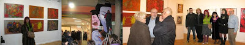
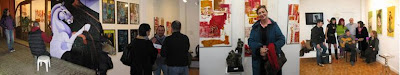

"Miradas": Exposición del 15-01 a 16-02-2010
viernes, 15 de enero de 2010

Miradas
{kind=link}

{kind=link}

http://www.youtube.com/watch?v=gXp9vKe-kDs
...mas crítica suele devenir la distinción entre el trabajo de un artista y un artesano. Considerando que esta manera muy simplista de pensar no sería la adecuada, ya que hay excelentes artesanos,pero también artistas miserables; a diferencia entre la artesanía, que deriva del folclore y la tradición, lo artístico, surge de la creatividad, fundamentada en el hecho de la idea sobre una base conceptual. Y estos dos aspectos juntos, son los que el escultor Luís Javier Guerrero, auna en su obra, reflejando en ella la eterna búsqueda de la realidad existencial. Luís Javier Guerrero domina la madera, cada una de sus obras son claro ejemplo de una variedad de formas en las que la nobleza del material se acentúa al ser manejado con una innegable maestría. Para este artista, el vacío significa tanto como un espacio lleno. En su trabajo sobre la tridimensionalidad podemos encontrar una simbiosis entre la geometría y la naturaleza humana que tiende a forjar en el espectador la idea de movimiento y dinamismo.
Manuel Moure, este joven pintor de formación autodidacta desarrolla principalmente en su pintura una pura abstracción informalista, podríamos decir que parte de la “action painting” con importante influencia del arte contemporáneo. En su obra podemos apreciar una composición de formas que nos vienen dadas mediante un juego de manchas y tintas rociadas donde lo conceptual prima sobre la materia, una materia que es tratada con espontaneidad, un ritmo y una cadencia sugerentes deamplio movimiento, nada es causal, todo vibra en un perfecto equilibrio. De el dice Francisco Pablos “…la línea, nerviosa, garabatea en espacios del que ya cuentan con carmines agredidos, con sienas deliberadamente emborronados, con vegetaciones de amalgama como se imaginan en profundidades submarinas de quien vive y trabaja junto al mar, contemplando cotidianamente solporesmulticromáticos de belleza tal, que es preciso enmascararlos, desvirtualos. Frente a lo convencional, la exigencia de la pura sensación, sin asideros formales, sin referencias concretas. Pintura en estado puro”.
Son palabras del artista Diego Moyua que presenta su serie -Mujeres y algo mas- .“Esta serie nace de mi convicción más absoluta de que tanto el alma, como la energía, el universo y todo cuanto nos rodea es espíritu femenin. Es de alguna manera una búsqueda personal, como la que define al autor, “llevo muchos años queriendo ser yo en todos los momentos”. Diego Moyua, basándose en el Yin y el Yang como fuerzas que nos hacen conocedores de nuestra propia existencia y de nuestros verdaderos valores, nos presenta una obra marcada por un surrealismo figurativo con tintes impresionistas, El poder creativo y la imaginación del pintor y escultor se pone de manifiesto ante una obra en la queel artista se lanza a profundizar en el mundo del inconsciente, con variedad de temas en relación al mundo que nos rodea. Moyua estudia la pintura al óleo, para compartir «el deseo de contemplar un cuadro y disfrutar de ese instante. Una obra que se ciñe a un surrealismo figurativo con tintes impresionistas, y donde color y forma tienden a conseguir que el ojo pueda descubrir lo que esconde la pintura.
...una historia que envuelve el dialogo de la pintura y la forma, en las obras de E. Pérez Calvo, un envoltorio que describe con proximidad la atmósfera que las envuelve , la obra como exponente del particular mundo interior del artista que toma cuerpo en sugeridas imágenes a modo de referente. Las obras de E. Pérez Calvo huyen de todo formalismo, la artista establece a modo de diálogo un juego entre lo racional y lo irracional con una paleta cargada de contraste y veladas o sugerentes formas. Según palabras de la artista: “Las experiencias vividas me llevan a expresarme desde lo subjetivo hacia lo universal y viceversa. Amar y ser amada, risas, lloros, alegrías, dolor, éxtasis e infierno, miedo y fortaleza forman mis universos representados en los cuadros.La soledad a periodos escogida, es el parto necesario para que nazca mi creatividad. Bendita vida que me lleva a mirarme y reconocerme en el otro”.
...sutiles metáforas visuales conviven en los lienzos de Noa Persán; metáforas que la aproximan a un neo-surrealismo suigeneris. Desde un autodidactismo ubérrimo en técnica e iconografía, Noa hace denotar que el sustrato primigenio de su obra cabe hallarlo en la pintura japonesa. Su fantasía lírica, sus enclaves oníricos, indeterminados, el cromatismo frío y equilibradamente dispuesto, los fondos neutros atemporales y austeros, hacen remitirse en un principio al kakemono, género nipón para ser dispuesto verticalmente. En él, paisajes contemplativos, flores, aves y figuras humanas se conjugaban como se conjugan en los óleos de la artista lucense-Las pinturas de Noa Persán están cercanas a la ilustración y sus personajes, siempre mujeres acompañadas de anímales oníricos e imaginarios o impregnadas de naturaleza, nos transportan al mundo de los sueños.Su inspiración a veces basada en la pintura Japonesa, la que adapta a su particular visión, en un constante juego con los elementos de la naturaleza para crear un mundo a su medida.
…Según palabras de Maria Gomez Rodrigo, Juan Antonio Torrijo trabajada sin titubeos, con rotundidad y seguridad, con audaces y versátiles composiciones manejadas entre trazos firmes, empastes de color y una variadísima gama de texturas, veladuras y movimientos que, sin duda alguna, sólo pueden producirse desde el conocimiento profundo. Nada es casual en el arte. Las cualidades de esta muestra pictórica sólo es posible después de mucho trabajo de pintor y hondas reflexiones. Juan Antonio Torrijo maneja magistralmente el color en sus abstracciones con saturaciones poderosas y potentes contrastes que van desde los trazos enérgicos hasta manchas y líneas más tenues y delicadas, pero todas ellas tienen algo en común, algo más profundo, algo que subyace bajo el color predominante, pues esos colores que vemos en el primer golpe de vista no están solos, estos colores y trazos adquieren su potencia y belleza porque están, precisamente, sobre esas elaboradas bases que en conjunto forman un “todo”. En esos estratos previos, Juan Antonio aplica ricas y variadas capas policromas de distintos matices y texturas, siendo el sustento y la fusión perfecta con todo lo esencial que se aprecia en cada una de las obras. Como ya he comentado: “nada es casual“, por ello, en estas capas subyacentes vemos muchas cualidades plásticas como: empastes de diversos relieves, tonos muy sutiles, veladuras, frotamientos, salpicaduras y una rica variedad de gamas que son fundamentales para conformar un “todo” y aunque a simple vista pudiera ocurrir que no reparásemos en ello, ese importante trabajo está ahí, por eso, cuando observamos las pinturas con detenimiento, podemos comprobar todos estos valores en la magnífica obra de este artista”...